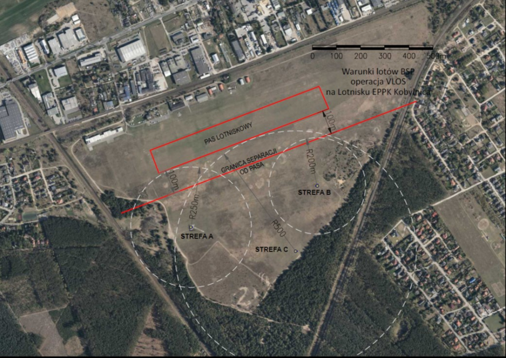

Regulamin korzystania ze strefy FPV na lotnisku Poznań-Kobylnica EPPK
- Loty BSP (Bezzałogowymi Statkami Powietrznymi) - w tym loty FPV - odbywają się wyłącznie w wyznaczonej do tego strefie lotniska Poznań-Kobylnica (EPPK), która w dalszej części tego regulaminu będzie nazywana "strefą FPV".
- Do wykonywania lotów w strefie FPV są uprawnieni wyłącznie członkowie Sekcji FPV stowarzyszenia Sky Camp ubezpieczeni od odpowiedzialności cywilnej z tytułu użytkowania BSP.
- Członkowie Sekcji FPV oraz inne osoby przebywające na terenie strefy FPV mają obowiązek podporządkowania się zarządzeniom zarządzającego Sky Camp.
- Członek Sekcji FPV może zapraszać i wprowadzać na teren strefy FPV gości, jednak ponosi pełną odpowiedzialność za te osoby. Gości należy zapoznać z regulaminem, a dzieciom należy zapewnić szczególną opiekę.
- Na terenie lotniska Poznań-Kobylnica (EPPK) wyznaczone są w sumie 4 strefy dedykowane okreslonym grupom BSP:
- Strefa modelarska A - modele samolotów RC, modele samolotów na uwięzi CL (grupy podstawowe), modele szybowców RC, modele motoszybowców RC (jeśli operacje nie kolidują z wykonywanymi przez grupy podstawowe).
- Strefa modelarska B - modele helikopterów RC, drony (czy tu chodzi o multirotory? bo drony to wszystko co RC :) ? ) VLOS
- Strefa modelarska C - modele szybowców RC, modele motoszybowców RC (grupy podstawowe), modele samolotów RC (jeśli ich operacje nie kolidują z wykonywanymi przez grupy podstawowe).
- Strefa modelarska D - wielowirnikowce (multirotory) FPV - przeznaczona dla Sekcji FPV.
- Loty BSP w wyznaczonych strefach odbywają się zgodnie z obowiązującymi przepisami (szczegóły na www.ulc.gov.pl/drony). Od pilota BSP jest wymagane posiadanie uprawnień dla kategorii A1/A3 lub wyższych. Minimalny wiek pilota wykonującego samodzielne operacje BSP wynosi 16 lat.
- Masa BSP: wybrać przedział, w który mieści się MTOM (Maksimum Take Off Mass) BSP
- Kategoria lotu: Szczególna
- Podkategoria lotu: Klub Modelarski
- Górna wysokość lotu: 120 m AGL
- Promień obszaru lotu: zgodnie z warunkami strefy D - strefy FPV
- Czas trwania lotu: zgodnie z potrzebą pilota BSP
- loty powyżej 120 m AGL
- loty poza wyznaczoną strefą D - strefą FPV
- loty BSP o masie MTOM powyżej 10 kg
- Mając aktywny Check-In w aplikacji DroneTower pilot wybiera opcję "Utrata kontroli"
- Podaje szacowany czas do rozładowania akumulatora i prędkość ucieczki BSP
- Wykonuje telefon na FIS Poznań i podaje informatorowi:
- że zgłasza utratę kontroli nad bsp w strefie lotniska poznań-kobylnica (eppk)
- kierunek ucieczki bsp
- wysokość na jakiej bsp odlatuje
- pozostałe informacje o jakie informator zapyta
- Jeśli po zgłoszeniu ucieczki pilot zdołał odzyskać kontrolę nad BSP lub wie, że ten spadł/rozbił się, informuje o tym FIS.
- Informuje Kierownika Lotów o zdarzeniu podając:
- kierunek ucieczki BSP
- wysokość na jakiej BSP odlatuje
- pozostałe informacje o jakie zostanie zapytany
- W przypadku problemów w komunikacji z Kierownikiem Lotów pilot BSP:
- Mając aktywny Check-In w aplikacji DroneTower wybiera opcję "Utrata kontroli"
- Podaje szacowany czas do rozładowania akumulatora i prędkość ucieczki BSP
- Wykonuje telefon na FIS Poznań i podaje informatorowi informatorowi:
- że zgłasza utratę kontroli nad bsp w strefie lotniska poznań-kobylnica (eppk)
- kierunek ucieczki bsp
- wysokość na jakiej bsp odlatuje
- pozostałe informacje o jakie informator zapyta
- Jeśli po zgłoszeniu ucieczki pilot zdołał odzyskać kontrolę nad BSP lub wie, że ten spadł/rozbił się, informuje o tym FIS.
- Załogowe statki powietrzne oraz skoczkowie spadochronowi mają pierwszeństwo. Piloci BSP są odpowiedzialni za ustapienie z kursu kolizyjnego. Znajdując się na kursie czołowym każdy lotnik wykonuje unik w swoje prawo. W przypadku BSP dodatkowo zaleca się zejście w prawo i dół.
- Członkowei Sekcji FPV oraz ich goście są zobowiązani do:
- bezpiecznego pilotowania BSP w wyznaczonej strefie FPV
- zachowania kultury osobistej we wzajemnych relacjach
- zachowania czystości na całym terenie lotniska
- Zabrania się:
- pilotowania BSP osobom niebędącym członkami Sekcji FPV lub zaproszonymi przez nich gośćmi,
- pilotowania modeli pod wpływem alkocholu, narkotyków i leków psychotropowych,
- pilotowania modeli nad widzami, nad wydzielonymi miejscami do parkowania samochodów bądź nad strefą obsługi modeli,
- przebywania w strefie FPV osób nieuprawnionych,
- spacerowania, jazdy konnej, jazdy samochodem, motocyklami, quadami, rowerami po terenie lotniska i wytyczonych strefach modelarskich, w tym strefie FPV,
- pozostawiania na terenie lotniska dzieci i zwierząt domowych bez opieki,
- gier i zabaw oraz uprawiania innego hobby mogącego powodować zniszczenie nawierzchni trawiastej lotniska i wydzielonych strefmodelarskich lub zagrożenie dla bezpieczeństwa wykonywania lotów modelami,
- lotów modelami podczas organizowania przez Aeroklub Poznański oficjalnych zawodów i imprez bez uzgodnienia z organizatorami tych zawodów i imprez.
- Na terenie lotniska dopuszcza się ruch kołowy i pieszy wyłącznie po drogach gruntowych prowadzonych po obrzeżu stref modelarskich i lotniska. Parkowanie samochodówjest dozwolone na obrzeżach lotniska w miejscach niekolidujących z operacjami lotniczymi SP i BSP. Aeroklub Poznański oraz Zarządzający nie odpowiadają za szkody na zdrowiu i mieniu osób nieuprawnionych do przebywania w strefach modelarskich, w tym w strefie FPV.
- Za szkody wyrządzone przez BSP odpowiada jego pilot.
- Aeroklub Poznański nie ponosi żadnej odpowiedzialności za skutki wynikłe z użytkowania stref modelarskich, w tym strefy FPV, w sposób niezgodny z tym regulaminem.
Warunki dla operacji z wykorzystaniem BSP w lotach FPV - loty rekreacyjne i sportowe
UWAGA! Podane warunki nie dotyczą lotów komercyjnych, szkolnych, modeli kosmicznych (rakiet) oraz modeli swobodnie latających. Na to jest wymagana osobna zgoda Zarządzającego lub Głównego Użytkownika (Sky Camp)
Operacje przy braku aktywności strefy ATZ
Każdy lot BSP musi być zgłoszony w aplikacji mobilnej DroneTower (lub innej, aktualnie wskazanej przez Polską Agencję Żeglugi Powietrznej).
Parametry zgłoszenia:
Operacje w aktywnej strefie ATZ
Gdy strefa ATZ jest aktywna (lub AUP podaje jej aktywność) lot BSP należy zgłaszać za pomocą aplikacji DroneTower (jak opisano w przypadku nieaktywnej strefy ATZ) ORAZ dokonać zgłoszenia do Kierownika Lotów, gdy są planowane:
W przypadu problemów w komunikacj z Kierownikiem Lotów utratę kontorli nad BSP jego pilot zgłasza na FIS Poznań (Służbę Informacji Powietrznej) na jeden ze wskazanych niżej numerów (są aktywne 24h):
Pilot BSP musi zachować separację 200 m od najbliższego skoczka i załogowych statków powietrznych. Podczas wykonywania skoków spadochronowych loty BSP o masie startowej nie przekraczającej 10 kg są dopuszczalne, natomiast loty BSP o masie powyżej 10 kg są zabronione od momentu wyrzutu pierwszego skoczka do wylądowania ostatniego.
Procedura na wypadek utraty kontroli nad operacją BSP
Kolejne kroki jakie wykonuje pilot przy nieaktywnym ATZ:
Kolejne kroki jakie wykonuje pilot przy aktywnym ATZ:
Zarząd Aeroklubu Poznańskiego
Kobylnica 15 czerwca 2026 r.
Telefony Alarmowe
- 112 - w razie zauważenia pożaru, wypadku, lub konieczności interwencji Policji,
- +48 618 172 323 - Komisariat Policji w Swarzędzu,
- +48 618 780 725, +48 500 123 368 - Aeroklub Poznański,
- +48 602 767 647 - Kierownik Lotów,
- +48 22 574 73 85, +48 61 896 73 85 - FIS Poznań.
| Strefa A | Strefa B | Strefa C | Strefa D |
|---|---|---|---|
|
|
|
|
Widok lokalizacji lądowisk modelarskich:
